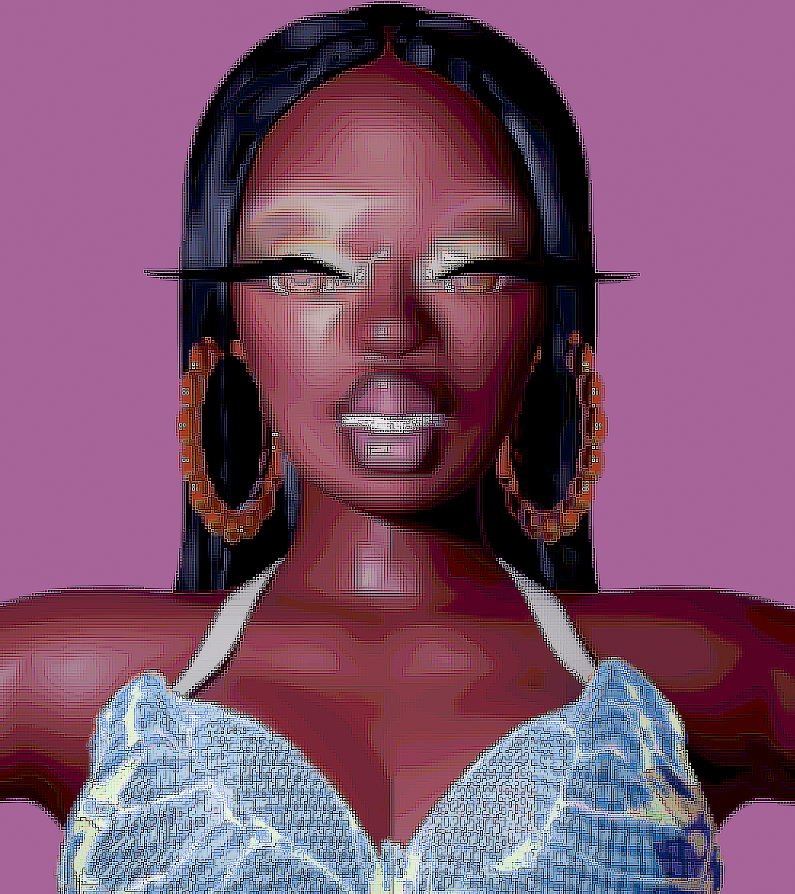
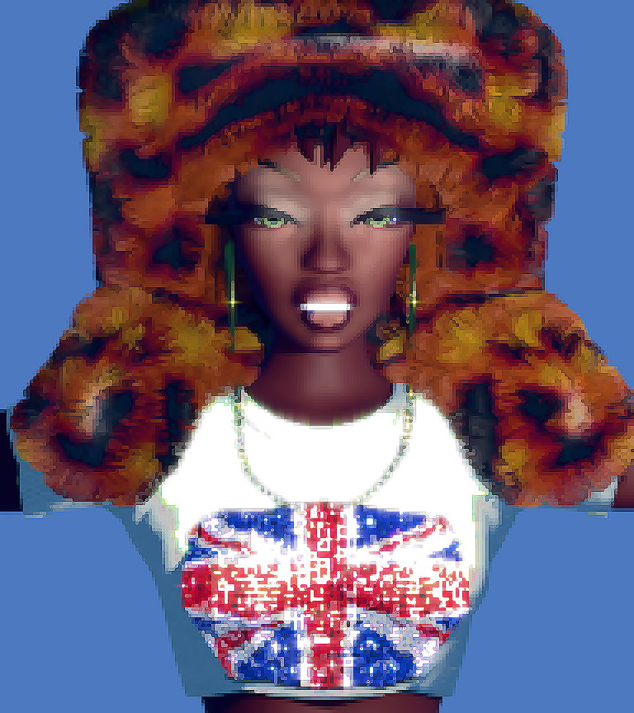
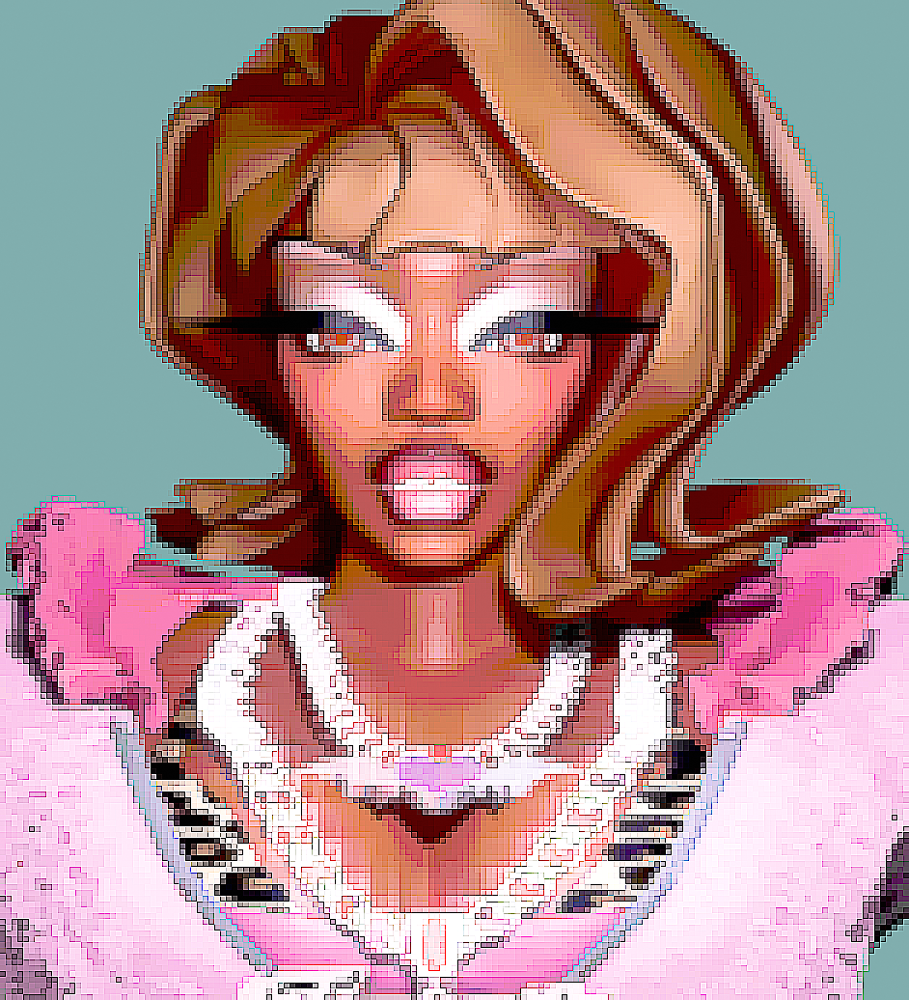

For my final project, I want to create an interactive “Digital Girlhood,” a retro-inspired virtual desktop environment built with THREE.js. One of my original 3D characters will appear inside the space as a digital companion, inspired by GirlsGoGames and other web games I played as a child.
Progress Video
My 3D Characters



Planned Features
- 3D room built with THREE.js
- My 3D character model as an interactive guide
- Retro OS-style windows and interface
- Clickable icons that open reflections + gallery
- Y2K-inspired gradients, sparkles, and UI elements
- Idle animations (breathing, blinking, small motions)